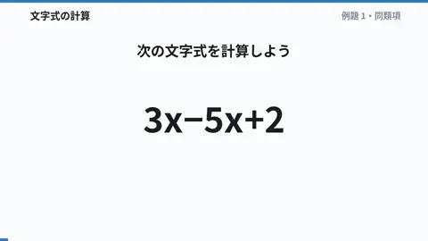
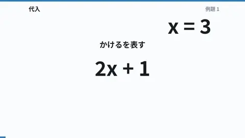
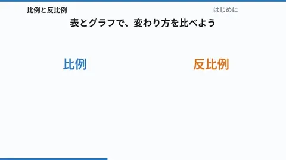

文字式の計算のしかたを確認

元の式から、文字を数に置きかえて計算
天びんと移項で式を動かす

表・式・グラフと計算
平行・回転・対称移動
ドラッグで像を動かす
垂直二等分線・角の二等分線・垂線
弧の長さと面積
面を1回転させて立体に
角度を変えて立体をつくる
側面のおうぎ形の中心角
見取図と立面図・平面図
点Pの移動と△APDの面積
対頂角は等しい
同位角・錯角を見る
180° ×（n − 2）
外角を集めると360°
形を変えても360°
頂点を動かして5つの条件
回数を増やすと一定の値へ
6×6の表で確率を求める
何番目でもあたりは1/3
点を動かして四分位数
扉を変えると勝率2/3
23人で50%をこえる
針を落としてπを求める
点を打ってπを求める
目標に届く確率
二項分布から正規分布へ
標本平均の分布
陽性的中率を1000人で
原点にもどる・√t
天気の定常分布